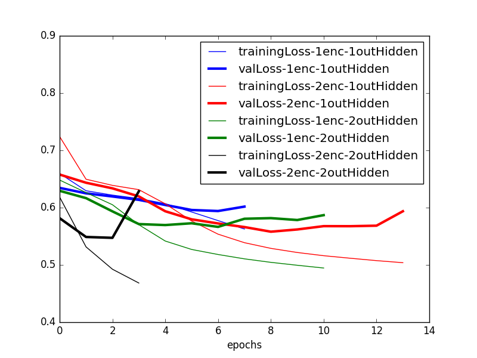
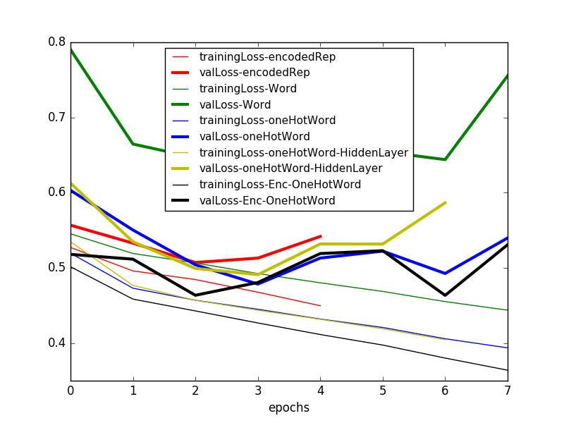

Figure 1. Comparing 1 or 2 word layers

Figure 2. Comparing enc, word, one-hot word, one-hot word + fc10, enc + one-hot word
Inputting one-hot encoded word is better than the word itself
Inputting intermediate layer vector from LipReader + one-hot encoded predicted word seems to work the best
Considering the best LipReader and Critic (so far):
trainPrecision: Precision of the critic on the training data, i.e. among its results on the training data, in how many cases is the critic able to correctly tell if the output of the LipReader is correct or not
totalTrainPrecision = 0.86, meanTrainPrecision = 0.55 (Better to take a weighted mean instead?)
totalTrainRecall = 0.58, meanTrainRecall = 0.33
totalValPrecision = 0.83, meanValPrecision = 0.90
totalValRecall = 0.58, meanValRecall = 0.98
Accuracies in paper: LIPREADING WITH LONG SHORT-TERM MEMORY:
Using LipReader "LSTM-h256-depth2-LSTMactivtanh-enc64-encodedActivsigmoid-Adam-1e-03-GRIDcorpus-s0107-s0909-tMouth-vMouth-NOmeanSub-epoch099-tl0.3307-ta0.8417-vl0.3782-va0.8304.hdf5"
Read Has My Algorithm Succeeded? An Evaluator for Human Pose Estimators for reference on Evaluators/Critics/Assessors